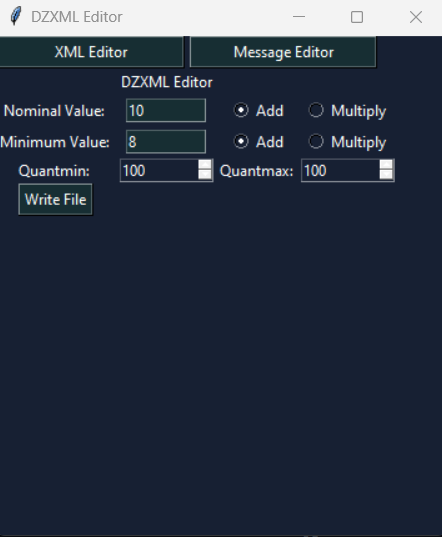
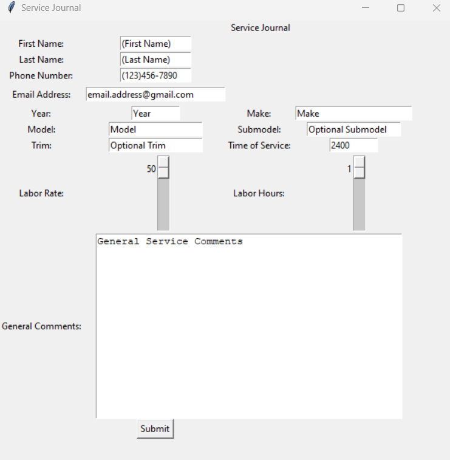
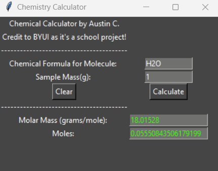

Projects
DZXML Editor
DayZ XML Editor was my first console-based project released to the public. It was made to 'automate' the process of editing xml files for administrators of servers and opened to the modding community. The program modifys values in roughly over 20,000 lines to precision. The program still features a roadmap with plans to be a full suite of tools for server owners in the future!
Service Journal
Service Journal was a project I started to keep track of my customer base with mechanic work. I got tired of trying to remember everything, so I decided to develop this application to streamline the process. It is object oriented, and currently writes customer information to a text file with a random UID. It will have a search function in the future and the ability to send invoices to customers! This project uses tkinter.
Chemistry Mole Calculator
The Chemistry Mole Calculator was written as a school assignment I had during my freshman year at Brigham Young University Idaho. Originally the expectations were to just print to the console with the correct math and logic. We are given the opportunity to utilize the 'stretch challenge' to get full credit for an assignment in which we must add creativity. I had been working a lot with Tkinter at the time so I decided to write the project with a GUI! I figured maybe the application will come in handy at a later date, so I put it on my github as well!